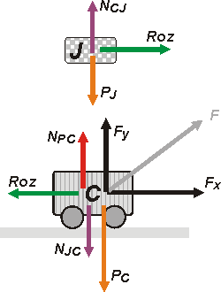

NO ME SALEN
EJERCICIOS RESUELTOS DE FÍSICA DEL CBC
Dinámica. Fuerzas de vínculo. Rozamiento.
|
|

|
| 2.19- Nicolás tira de su carrito con la caja de
sus juguetes encima, aplicándole una fuerza de
30 N como se muestra en la figura. |
El carrito tiene 10 kg, la caja 2 kg. Despreciando
el rozamiento del carrito contra el piso, hallar:
a- La aceleración del conjunto.
b- El mínimo valor del coeficiente de rozamiento
(¿cuál?) entre la caja y el carrito, para que
no se despegue del mismo. |
 |
Como siempre, empezamos TODOS los problemas de dinámica haciendo un DCL. Si no lo hacés, perdés. Si lo hacés mal, perdés.
|
|  |
Acá tenés un bonito ejemplo que desmiente esa creencia popular de que la fuerza de rozamiento se opone al movimiento. El juguete se mueve hacia adelante gracias a que la fuerza de rozamiento que le hace el carrito apunta hacia adelante. En este caso es a favor, no en contra.
En rojo te puse la fuerza normal o (perpendicular) a la superficie de contacto, la que el carrito le hace al juguete, Ncj , y la que el juguete le hace al carrito, Njc. Por supuesto son par de interacción... qué interacción: el contacto entre el carrito y el juguete.
Y mirá que hay que descomponer F:
FX = F cos 37º
FY = F sen 37º
Hacemos la clásica: después del DCL vienen las ecuaciones de Newton. |
|
|
|
| Juguete |
→ ΣFx = mJ ax → |
Roz = mJ . a |
[1] |
| Juguete |
→ ΣFy = mJ ay → |
Ncj — PJ = 0 |
[2] |
| Carrito |
→ ΣFx = mC ax → |
FX — Roz = mC . a |
[3] |
| Carrito |
→ ΣFy = mC ay → |
Fy + Npc — Njc — PC = 0 |
[4] |
|
|
Sumando miembro a miembro la [1] con la [3] nos queda la sencilla ecuación:
FX = (mC + mJ ) . a
F cos 37º = (mC + mJ ) . a
a = F cos 37º / (mC + mJ )
|
|
|
|
El mínimo valor del coeficiente de rozamiento estático, μe mín, ya que no queremos que el juguete se deslice, se caiga y se rompa, que costó caro, será aquél que produzca una aceleración igual a la del carrito.
Roz = μe mín . NCJ
Donde (de [2]):
NCJ = PJ
Entonces:
μe mín = Roz / PJ
μe mín = mJ . a / mJ . g
μe mín = a / g
|
|
|
 |
| |
DESAFIO: Dos cosas... ¿cómo puede ser que el coeficiente mínimo sea el máximo?
¡Me quieren volver loco! La segunda es más sencilla: responder sin dudar ¿por qué no necesitamos usar la ecuación [4]? |
|
| |
| Algunos derechos reservados.
Se permite su reproducción citando a ricuti, y decís que es el autor, claro. Última actualización nov-06. Buenos Aires, Argentina. |
|
|
|